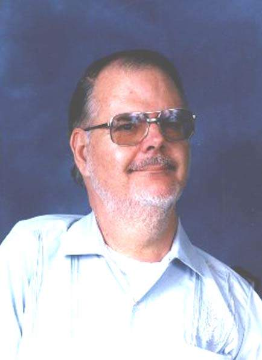

|  | |
I'll try to tell you now what led me to decide to come to El Salvador ...
- As I said earlier, I was born in Kansas (1941).
- In 1955 I got polio, leaving me severely disabled in all 4 limbs, but not my mind (I think). I get around in an electric wheelchair.
- I graduated from Southwestern College, a small 4-yr college in south-central Kansas in 1965, & began teaching h.s. math & social studies in small towns, while living with my father & step-mother, he a school administrator, she a teacher.
- In those latter years & up to 1971, my 2 younger brothers had left home to seek their fortunes, as the story says. And my step-mother divorced my father, leaving him to take care of me.
- Since my dad wasn't in the greatest of health in those times, I felt I had to look for a way to "seek my fortune" as well, independent of him, a much more difficult task, as I'm sure you can imagine. So being an NCTM member, one day in Nov 1970, I received a brochure from the math dept of the U. of Illinois, describing an Academic Year Institute, sponsored by NSF. It offered a money stipend + benefits, etc. and you had to be teaching currently in order to apply, which I was. And I had recently learned thru a contact that the UI was a good place for people in wheelchairs - rehab services, buses, the works.
- So I applied! And was denied. Well, not exactly. As I had filled out the places on the form about being handicapped, the director told me that if (a) the rehab services office would approve me, & (b) I could foot my own bill, then I could join the others.
- Without going into all the details, those hurdles were met. A friend & ex-student said he'd go with me & take care of my physical needs. And after I got there on campus, the director (Dr Zaring) told me that they could grant me a tuition waiver, to help cut my expenses. Whew! So I got my master's degree by the following summer ('72).
- Well, life was so nice there for a person in my condition. Tho my friend left me, I could find students to trade care for room & board (I lived in married student housing - mini-apartments - on campus). So I decided to transfer to the College of Education & go for a doctorate in math ed.
- Suffice it to say, I'm an ABD now. But that's another tale.
- From Sept '77 to May '80, I worked in an all-black k-8 school district in the suburbs south of Chicago. Work went well, no troubles in that regard. But managing to find a person(s) to look after my care was getting hard. It wasn't always great down at UI in Urbana-Champaign, but really tough up there.
- In the fall of '79, 3 forces in my life fused together into one plan. (a) Ever since my childhood back in Kansas, I had wanted to learn Spanish, & either visit or live in a Spanish-speaking country. I had picked up a little knowledge in a h.s. course, among other ways. (b) After graduating from college in '65, I naturally was thinking about marriage. But who would want me? In a wheel chair, etc. (My parents never let me even entertain the thought, much less have girlfriends -- something hard to come by in small town Kansas, at my age.) (c) In 1973 I met the Bah�'� Faith at the university, & decided that it was good, & good for me. So I became a Bah�'�. One of the features in this religion is called "pioneering", going to another country, to teach others about it. But unlike a normal church missionary, a Bah�'� pioneer is not salary-supported by a home-based organization. Rather he/she must find his/her own means of support in his/her adopted home.
- I saw an article that fall in a Bah�'� publication about a young follower who was then pioneering in Mexico, teaching ESL (English as a Second Language). By that time I had gotten interested in ESL, bilingual ed, etc.; taken a couple of Spanish courses at UIUC; not making matrimonial progress; and getting frustrated with my personal situation. So I wrote that guy. He answered right back, saying "Come on down. The English institute where I work is a small family business who wants North Americans to spend a year teaching. In return they offer room & board, + a small salary for personal items." Well, I decided to put my trust in God & go! What did I have to lose? I had suffered too many freezing Chicago winters -- not good on a wheel chair or my weak arms. And what the heck -- I might even find a wife, some Spanish-speaking young woman willing to marry a U.S. citizen. (ha.)
- With the help of a couple of good friends, I loaded my van with all my worldly goods & headed south, June 1980. Destination: Tapachula, Mexico. The extreme southern tip. In mid-October, a young Salvadorean woman, Gloria, arrived with 3 of her siblings & a 9-yr-old daughter, refugees escaping from troubles here in El Salvador. She became the cook at the institute. And as they say, one thing led to another. We got engaged in December, & married June 28, 1981 -- the first Bah�'� wedding ceremony performed in that region.
- Earlier that spring, thru contacts with a Bah�'� couple who was already working at the Escuela Americana in San Salvador, I landed a job teaching math, grades 7-9. And not a minute too soon. My year was almost up at the institute, I couldn't find a job in Mexico, & it turned out that my wife had a girl & a boy older than the daughter I met first. Instant family! (You know what I mean...)
- July 1981 Gloria, her 2 daughters (she returned once to bring the other daughter out), her brother, her sister, her sister's fianc�e (driving) & I all piled in my van & came to E.S. to start a new life.
To be continued...
More photographs at this page. See also, A Trip to Museo Tin Marin, and A Charla in the Finca.
| Comments? Send e-mail. | Back to top | Go back to Home Page | Go back to Contents |